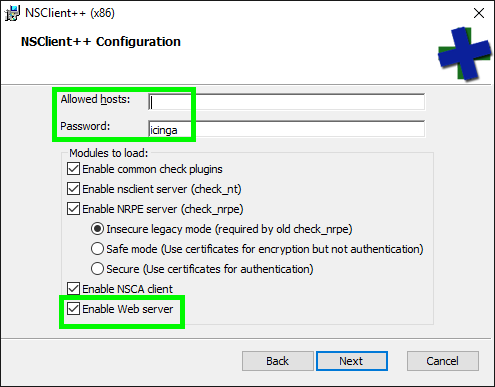

NSClient++ API
NSClient++ provides its own HTTP API which can be enabled with the WEBServer module.
The new API is described in separate pages (on per object):
Setup
Enable the WEBServer module
You can enable the WEBServer module during the package installation.
Note
Please ensure to specify a secure password (default).

If you wish to do this with a silent installer you can use the following command:
msiexec /i NSCP-<VERSION>-x64.msi /q CONF_WEB=1 NSCLIENT_PWD=<my secure API key>
Alternatively you can enable the WEBServer module on the CLI afterwards:
nscp web install --password <MY SECURE API KEY>
Configuration
Edit the /settings/WEB/server section in the nsclient.ini
configuration file.
The default values password and allowed hosts (/settings/default) are shared by all modules (i.e. NRPEServer and NSClientServer) if you want to have separate values for the WEBServer you can override them under /settings/WEB/server.
; MODULES - A list of modules.
[/modules]
; WEBServer - A server that listens for incoming HTTP connection and processes incoming requests. It provides both a WEB UI as well as a REST API in addition to simplifying configuration of WEB Server module.
WEBServer = enabled
[/settings/default]
; PASSWORD - Password used to authenticate against server
password = <MY SECURE API KEY>
; ALLOWED HOSTS - A coma separated list of allowed hosts. You can use netmasks (/ syntax) or * to create ranges. parent for this key is found under: /settings/default this is marked as advanced in favor of the parent.
allowed hosts = 127.0.0.1,192.168.2.0/24
[/settings/WEB/server]
; PORT NUMBER - Port to use for WEB server.
port = 8443s
; CERTIFICATE - Ssl certificate to use for the ssl server
certificate = ${certificate-path}/certificate.pem
Restart the nscp service afterwards.
net stop nscp
net start nscp
You can change the password from the command line using the following command:
nscp web password --set icinga
The next chapter provides a quick overview of how you can use the API.
Introduction
Parameters
Many API methods take optional parameters. For GET requests, any parameters not specified as a segment in the path can be passed as an HTTP query string parameter:
curl -k -i -u admin https://localhost:8443/api/v1/scripts/ext?all=true
ext value is provided for the :runtime parameter in the path while true is passed in the query string for the :all parameter.
Reserved characters by the HTTP protocol must be URL-encoded as query string, e.g. a space character becomes %20.
For POST, PUT, and DELETE requests, parameters not included in the URL should be encoded as JSON with a Content-Type of 'application/json':
curl -k -i -u admin -X PUT https://localhost:8443/api/v1/modules -d "{\"loaded\":true,\"name\":\"CheckSystem\"}"
Root Endpoint
You can issue a GET request to the root endpoint to get all the supported versions of the systems.
From each version you can further issue a GET to get a list of all endpoint categories that the REST API supports:
curl -k -i -u admin https://localhost:8443/api
{
"legacy_api":"https://localhost:8443/api/v1"
"current_api":"https://localhost:8443/api/v1",
"beta_api":"https://localhost:8443/api/v1",
}
curl -k -i -u admin https://localhost:8443/api/v1
{
"modules_url":"https://localhost:8443/api/v1/modules",
"queries_url":"https://localhost:8443/api/v1/queries",
"scripts_url":"https://localhost:8443/api/v1/scripts"
}
Response codes
The API will return standard HTTP statuses including error codes.
When an error occurs, the response body will sometimes contain additional information about the problem and its source.
2xx: Success
A status code between 200 and 299 generally means that the request was successful.
4xx: Client Errors
Authentication failure
Attempting to access a protected resource or using invalid credentials will always result in a 403 Forbidden.
curl -k -i -u nimda https://localhost:8443/api/
HTTP/1.1 403
403 Forbidden
In addition to authentication issues there are two possible types of client errors on API calls that receive request bodies:
Invalid JSON
Sending invalid JSON will result in a 400 Bad Request response.
curl -k -u admin -X PUT https://localhost:8443/api/v1/modules -d "{\"loaded\":true,\"name\":\"
HTTP/1.1 400 Bad Request
Content-Length: 21
Problems parsing JSON
Invalid fields
Sending invalid fields will result in a 422 Unprocessable Entity response.
Please note only fields used are read thus sending unused fields will most likely be ignored.
Also many times values are only checked for a given value with all other input resulting in a default value.
TODO Add example here.
5xx: Server errors
A status in the range of 500 generally means that there was a server-side problem and NSClient++ is unable to process your request. The reason for this can be many and the best option to diagnose is to review the NSClient++ log file. In general a 500 should be reported as a bug in the NSClient++ issue tracker: https://github.com/mickem/nscp/issues
HTTP Verbs
Where possible, the API strives to use appropriate HTTP verbs for each action.
| Verb | Description |
|---|---|
GET |
Used for retrieving resources. |
POST |
Used for creating resources. |
PUT |
Used for replacing resources or collections. |
DELETE |
Used for deleting resources. |
Allowed Hosts
Ensure to restrict the API to local access, and only allow remote access if necessary.
Note
Keep in mind that the web interface (depending on how it is configured) allows you to modify the client configuration -- use with care on remote access!
Edit the /settings/WEB/server section in the nsclient.ini
configuration file.
[/settings/WEB/server]
; ALLOWED HOSTS - A commaseparated list of allowed hosts. You can use netmasks (/ syntax) or * to create ranges. parent for this key is found under: /settings/default this is marked as advanced in favor of the parent.
allowed hosts = 127.0.0.1,192.168.2.0/24
Restart the nscp service afterwards.
net stop nscp
net start nscp
Authentication
There are two ways to authenticate through the API.
Note that most requests (notable exception is static resources) require authentication and will blankly return 403 Forbidden regardless of if the request is valid or not.
Basic Authentication
curl -k -i -u admin https://localhost:8443/api
Barer token Authentication
TODO This is not implemented yet (ish).
Authorization
The rest API is secured using a series of privileges required (one for each API call) which are connect to roles which you can assign users. The default user (root) will, by default, receive unlimited privileges so it can do anything. This means you most likely want to create separate users when using the REST API so you can lock down the privileges.
Privileges
Privelages can be found net to each API Call in the documentation. They are dot-separated strings.
For instance the /api/v1/modules/:module/commands/load requires the modules.load privilege.
To hand this out to a role you would lie the string under the roles like so:
[/settings/WEB/server/roles]
my_role=modules.load
This can easily become cumbersome and thus you can add a star (*) to add multiple privileges to a role like so:
[/settings/WEB/server/roles]
my_role=modules.*
This gives the role my_role not only modules.load but also all other modules.:something commands such as modules.list
This is in fact how the legacy role is created:
[/settings/WEB/server/roles]
legacy=*
Adding users
You can add users either via adding them manually to the config or use the command line syntax.
nscp web add-user --user foo --password foo
[/settings/WEB/server/users/foo]
password=foo
role=limited
Assigning roles to users
Once we have defined a role we can assign it to user by adding the user to that role:
nscp web add-role --role limited --grant info.get
[/settings/web/roles]
limited=info.get
Hypermedia
All resources may have one or more *_url properties linking to other resources.
These are meant to provide explicit URLs so that proper API clients don't need to construct URLs on their own.
Pagination (next page)
Some resource will deliver long lists and then you can use pagination to fetch the next page.
You can specify further pages with the ?page parameter.
For some resources, you can also set a custom page size with the ?per_page parameter.
Note that for technical reasons not all endpoints respect the ?per_page parameter.
curl -i -s -k -u admin "https://localhost:8443/api/v1/logs?page=1&per_page=10"
Link Header
Note: It's important to form calls with Link header values instead of constructing your own URLs.
The Link header includes pagination information:
curl -i -s -k -u admin "https://localhost:8443/api/v1/logs?page=1&per_page=10"
HTTP/1.1 200
Content-Length: 1827
Link: <https://localhost:8443/api/v1/logs?page=2&per_page=10>; rel="next", <https://localhost:8443/api/v1/logs?page=4&per_page=10>; rel="last"
This Link response header contains one or more Hypermedia link relations, some of which may require expansion as URI templates.
The possible rel values are:
| Name | Description |
|---|---|
| next | The link relation for the immediate next page of results. |
| last | The link relation for the last page of results. |
| first | The link relation for the first page of results. |
| prev | The link relation for the immediate previous page of results. |
Tips and tricks
Formatting json
Since the JSON returned from the APIs are not pretty printed a good idea is to use the python json.tool to make sure the result is readable.
Compare the following two examples:
C:\source\tools>curl -k -u admin https://localhost:8443/api/v1
{"modules_url":"https://localhost:8443/api/v1/modules","queries_url":"https://localhost:8443/api/v1/queries","scripts_url":"https://localhost:8443/api/v1/scripts"}
C:\source\tools>curl -k -u admin https://localhost:8443/api/v1 |python -m json.tool
{
"modules_url": "https://localhost:8443/api/v1/modules",
"queries_url": "https://localhost:8443/api/v1/queries",
"scripts_url": "https://localhost:8443/api/v1/scripts"
}
Another option to is to use jq to format the returned JSON output in a readable manner.
The documentation prefers python -m json.tool as Python is available nearly everywhere.
Fields
Future versions of NSClient++ might set additional fields. Your application should gracefully handle fields it is not familiar with, for example by ignoring them.
Legacy API
The current stable version of NSClient++ does not yet have the new API which is describe in this page. So for details on that please review the legacy API.
Integrations
Check Plugins
- check_nscp_api included in Icinga 2 v2.7.
- check_nsc_web standalone Plugin written in Go, suitable for all compatible cores (Naemon, Icinga 1/2, etc).
- centreon_plugins included in centreon plugins project.
References
- Icinga Blog: NSClient++ 0.5.0, REST API and Icinga 2 integration